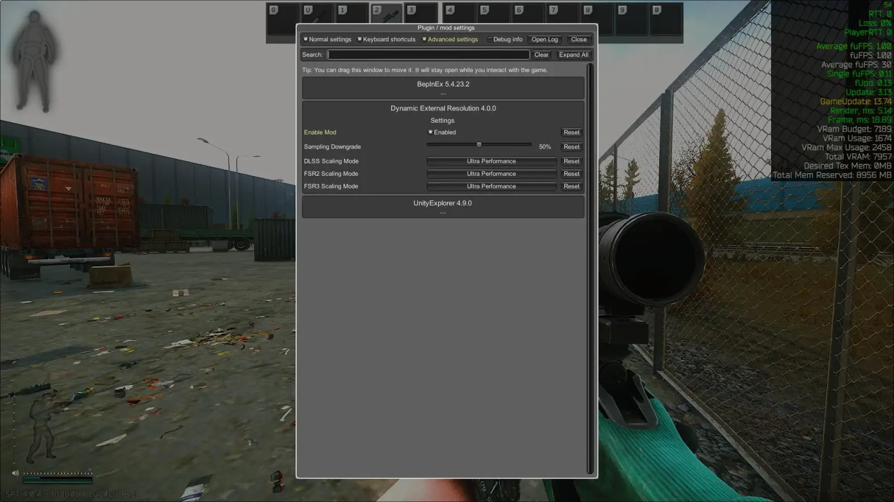
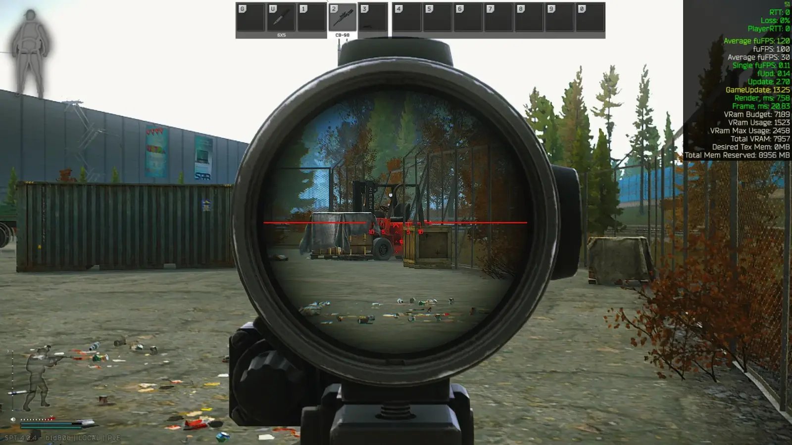
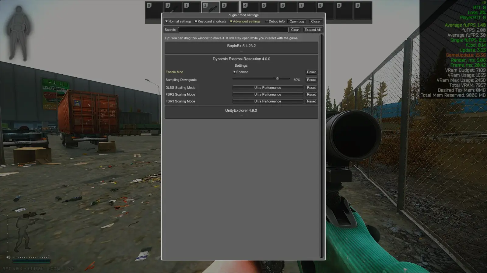
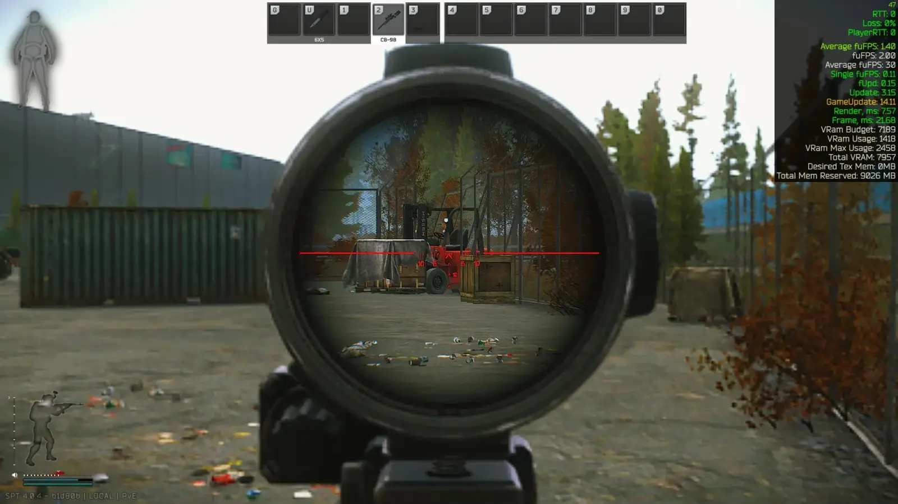

Dynamic External Resolution Patch (DERP)
- Downloads
- 20,682
- Favourites
- 38
- Mod lists
- 72
What this mod does
Escape from Tarkov uses “picture in picture” (PiP) to render weapon scopes. This means the game’s engine has to render the entire scene twice. Once for your main screen and a second time inside the scope’s view. This is very demanding on system performance and often causes significant FPS drops. This mod changes rendering resolution of main screen when using scopes which can boost performance.
Installation

How to change settings
Press F12 in game and find this mod in mode menu.

Here you can change settings
Sampling downgrade changes resolution with TAA enabled(no FSR/DLSS).
0 - no change 25 - 75% of default resolution 50 - 50% of default resolution 75 - 25% of default resolution 100 - 0% of default resolution (dont use it)
50% TAA example

80% TAA example


FSR/DLSS settings changes FSR/DLSS preset of external image when scoped. Preset in game settings sets for image in scope.
Setting this same as your game settings does nothing(this is why black flickers disappear)
Known bugs
-
Black flickering when ADSing with FSR/DLSS enabled. Dont know how to fix this. Only solution is to use TAA instead of FSR/DLSS. On my PC setup it changes nothing because of CPU bottleneck.
-
Black strips/flickering black screen using TAA. Not so often but can happen. Try changing settings in game and mod menu and it go away.
Version
1.1.1
Fixed typo preventing FSR 3 from working with certain mod settings.
Version
1.1.0
Seems to work unchanged on 4.0.4. Probably works on any 4.X.X
nuked from forge, try source code url
Version
1.0.0
No description was available in the snapshot.